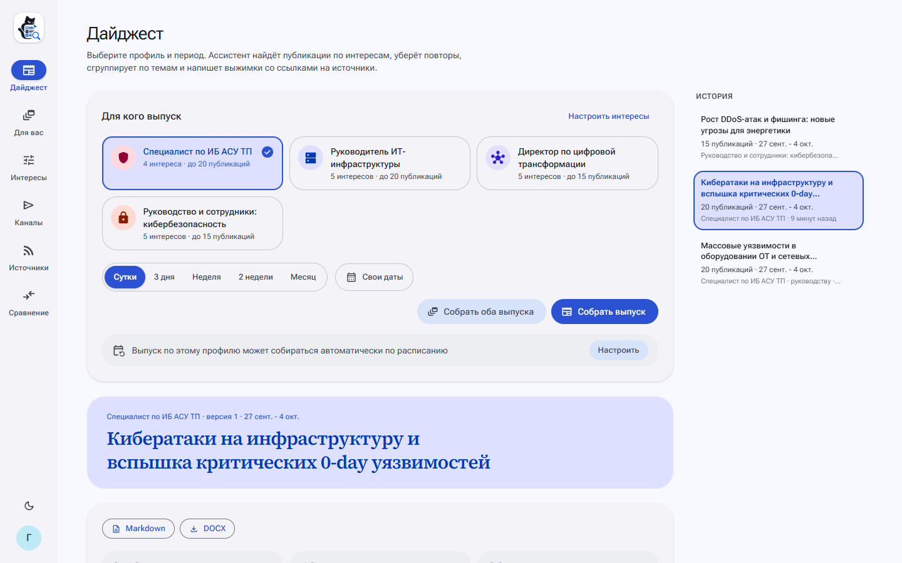
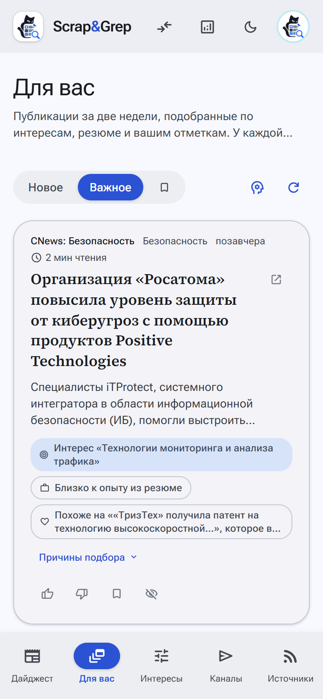
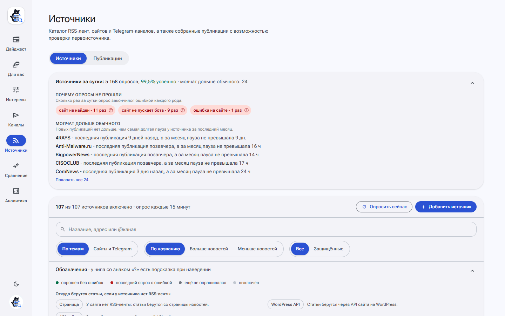
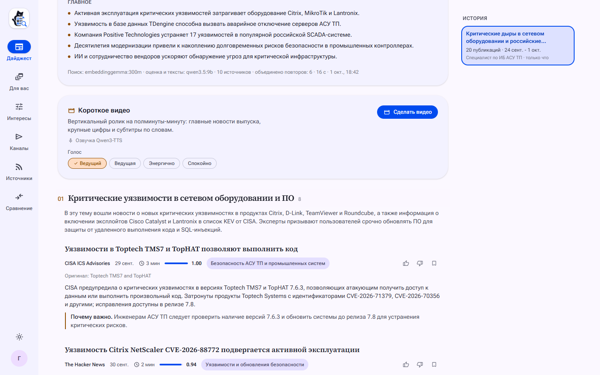
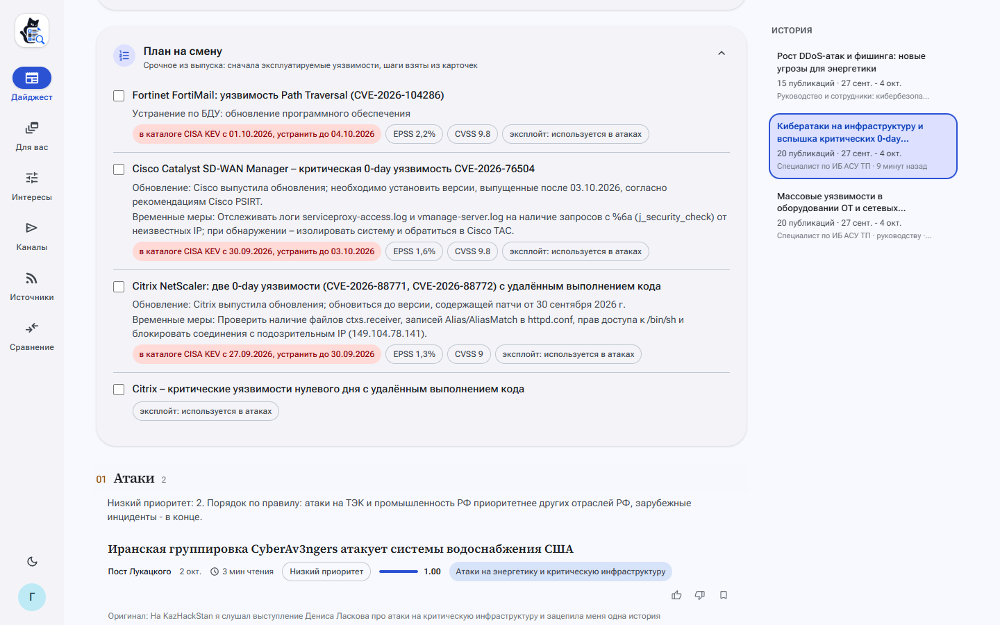
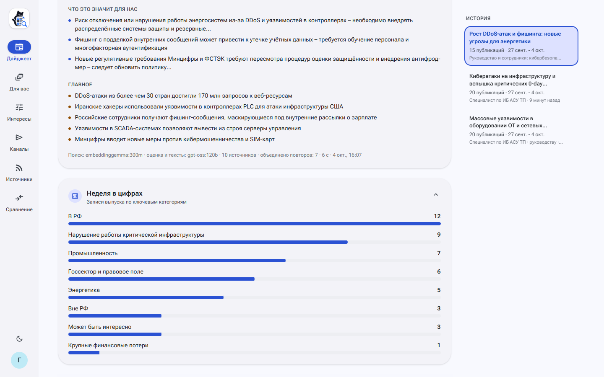
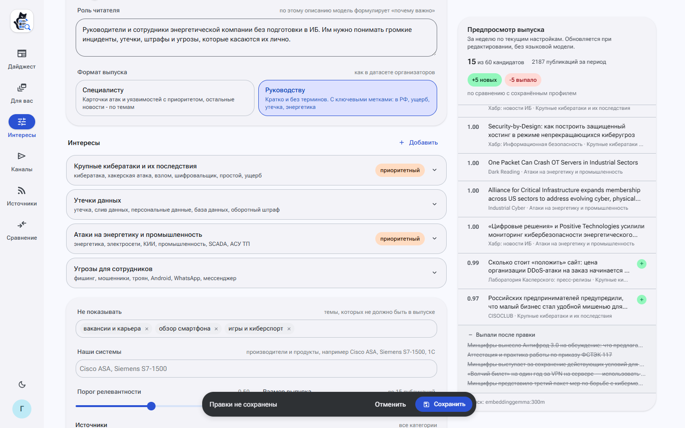
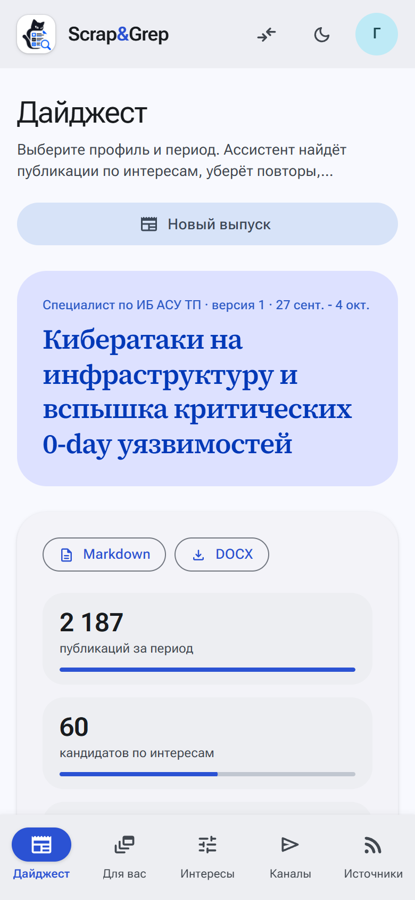

Сбор из 107 источников, отбор по интересам, приоритет по правилу заказчика и проверка фактов по CISA KEV и БДУ ФСТЭК. Специалисту каждый день, руководству раз в неделю.


Стоимость в месяц при разном времени на мониторинг у каждого из трёх специалистов, плюс 3 часа в неделю на сводку руководству. Часы в день - допущение, пока их не замерили у аналитика.
Медиана SOC-аналитика 149 000 ₽, Хабр Карьера, I полугодие 2026; с взносами 1 170 ₽ за час. Расчёт: docs/BUSINESS.md, «Экономика».
107 источников, из списков организаторов все 62. Защищённые сайты читаются лестницей способов, любой адрес добавляется из интерфейса.
Профиль читателя: интересы, исключения, порог. Модель оценивает 60 кандидатов, у каждой записи и каждого отказа есть причина.
Правило заказчика: атака на энергетику и промышленность РФ выше остальных, уязвимость с эксплойтом выше. Эксплойт сверяется с CISA KEV и БДУ ФСТЭК.
Специалисту за сутки с планом на смену, руководству за неделю с выводами и брифингом голосом. Markdown и DOCX, из браузера или консоли.
107 источников по виду
по теме
1 737 публикаций за неделю 25.09-02.10. Стек приходит со снимком из 2 109 реальных публикаций и работает без интернета.

Каждый источник опрашивается раз в 15 минут; здоровье за сутки и способ чтения видны в каталоге.
Каждый пример датасета прогнан через те же шаги, что запись выпуска, и положен рядом с желаемым выводом.
| Что сравнивали | Результат | Где расходимся и почему |
|---|---|---|
| Специалисты: атаки и уязвимости | тип 6 из 6, приоритет 4 из 6 | у specialist-4 в датасете чужой CVE (уязвимость WSUS из specialist-7), у specialist-3 страной жертвы названа РФ при атаке на Европу и Азию |
| Специалисты: посты Telegram | тип по содержанию | датасет кладёт пост в «Инфо» по источнику; Scrap&Grep даёт посту об уязвимости карточку уязвимости и ссылки из поста, как в желаемом выводе |
| Руководство: двенадцать признаков датасета | 22 из 32, лишних 13 | по каждому из 11 примеров видно, какой признак совпал, какой пропущен и какой поставлен сверх датасета |
| Чтение страниц примеров | 19 из 21 | два сайта ответили HTTP 202 и 401 |
Ещё в репозитории: выпуски для четырёх профилей в Markdown и DOCX и три сценария смены интересов с разбором, что пришло и что ушло.
examples/dataset/README.md; examples/README.md
Общий, свой у источника или пулом с ротацией при 403 и 429.
Ступень и причина записываются: «Шаг «обычный запрос» не сработал (403), сработал «отпечаток Chrome»».
Защита от SSRF на каждой ступени: внутренние адреса не читаются.
Замеры 2 октября 2026 года, без прокси. docs/DECISIONS.md, «Сбор: лестница способов чтения».
Модель сама вызывает инструмент lookup_vulnerability: CISA KEV, БДУ ФСТЭК, NVD, EPSS и Exploit-DB по локальным копиям. Номера, о которых она не спросила, граф проверяет сам.
Сборка - граф LangGraph с чекпоинтами: упавший воркер продолжает с прерванного шага. Ответы модели кешируются, повторная сборка по тому же профилю занимает секунды.


Сначала план на смену: срочные уязвимости и атаки с галочками, что обновить и какие индикаторы искать. Записи о продуктах из «Наших систем» помечены «касается нас».

«Что это значит для нас», период в цифрах против прошлого выпуска, записи в одно-два предложения без номеров CVE и брифинг голосом на две минуты.

Три сценария на одной неделе, выпуск специалисту
20 записей до и после: пришло 9, ушло 9.
Пришло 3, ушло 3; обе записи о Citrix ушли с причиной.
Ушедшие вытеснены более сильными, у каждой её оценка.
Предпросмотр работает без языковой модели, «Сравнение» показывает два выпуска рядом.
examples/change
Записей, совпавших с первым прогоном gpt-oss:120b, из 20, и время сборки
Разделы, карточки, приоритеты и проверка работают на всех моделях и без модели.
Два прогона одной gpt-oss:120b совпадают в 18 записях из 20: это шум самой модели.
Поддерживаются Ollama и любой OpenAI-совместимый API: Yandex AI Studio, vLLM. По умолчанию в режиме с моделью - локальная Qwen3.6 35B-A3B.
Выпуск специалисту по ИБ АСУ ТП за неделю примеров: 60 кандидатов, 20 записей. examples/models/README.md
offline_bundle.sh save: 7 образов ядра 4,7 ГБ и модели 1,6 ГБ за 4 мин 21 с. load в пустой каталог за 3 мин 29 с, копия поднялась без сети и прошла проверочный сценарий.
Железо: только свои замеры
| Конфигурация | Сборка | Выпусков в час |
|---|---|---|
| Без языковой модели | 0,5 с | тысячи |
| qwen3.5:9b, RTX 5070 12 ГБ | 81-102 с | 35-44 |
| qwen3.5:0.8b, процессор ноутбука | 731,5 с | 4-5 |
| Qwen3.6 35B-A3B, gpt-oss-120b локально | ждут замера на карте NVIDIA | |
README, «Закрытый контур» и «Требования к железу».
экономии в месяц на команду из трёх специалистов, 0,73 млн ₽ в год
Выпуск специалисту: 166 511 токенов на вход и 16 127 на выход, около 2,9 ₽. Руководству около 1,9 ₽.
Чтение выпуска остаётся у человека: 15 минут в день заложены в расчёт.
Хабр Карьера; тарифы Ollama на 03.10.2026; курс ЦБ 83,48 ₽; Selectel. docs/BUSINESS.md, «Экономика».
Учитывает интересы, резюме и отметки читателя и объясняет, почему статья в ней.
Должность и навыки из резюме дают профиль с первой минуты; имя и контакты вырезаются до анализа.
Боты публикуют новости по расписанию под аудиторию каждого канала, с черновиками на проверку.
Выпуск руководству пересказывается примерно за две минуты, без номеров уязвимостей.
Claude, Cursor и другие клиенты видят по личному ключу только ленту и выпуски этого читателя.
Показы и отметки пишутся в ClickHouse; модель ранжирования включается, только если обгоняет ручные веса.

Закрытый контур: образы, веса модели, корпоративный прокси, проверочный сценарий. 10-20 сотрудников из разных групп, у каждого свой профиль.
Время до готового обзора, полнота против ручной подборки, доля открытых записей и отметок по неделям. События уже пишутся в ClickHouse.
Полнота выпуска не ниже 90% от того, что нашёл аналитик, при проверке выпуска не дольше 15 минут в день.
Попробовать
Интерфейс на localhost:8080, экрана входа нет.
Оба выпуска в Markdown и DOCX в папке out/.
Репозиторий: git.codenrock.com/codenrock/ii-assistenty/misis-mojarung/assistent-dlya-sozdaniya-it-ib-daydzhestov
docs/BUSINESS.md, «Пилот»; README, «Быстрый запуск».